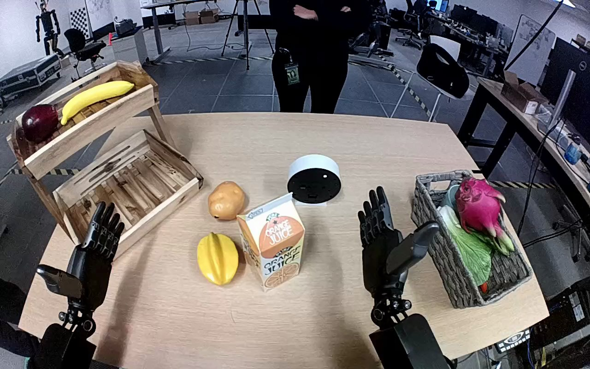

NVIDIA GR1 · 91
Video 91

Visual review action_review.json
{
"prompt_protocol": "humanoid_action_v1",
"prompt_provenance": "visually_authored_from_video_and_initial_frame",
"reviewed_contact_sheets": [
"sheet_001.jpg"
],
"inspected_frame_stride": 2,
"inspected_sampled_frame_count": 60,
"initial_scene": "Robot-mounted forward/downward view over a tabletop. The orange juice carton stands centrally between a yellow star-shaped fruit and a tipped white-and-black bowl. A gray woven basket containing produce is to the robot right; empty wooden crate is to the left. Two robot forearms enter from the near edge; a person across the table does not participate.",
"observed_sequence": [
{
"frame_start": 0,
"frame_end": 26,
"description": "Both hands begin open. Right arm moves inward from beside the gray basket toward the upright orange juice carton. Left hand remains away from the carton near the wooden crate.",
"confidence": "high"
},
{
"frame_start": 27,
"frame_end": 58,
"description": "Right hand positions around the carton and closes fingers and thumb to secure it, slightly shifting its position on the tabletop. Left hand stays open and does not provide support.",
"confidence": "high"
},
{
"frame_start": 59,
"frame_end": 80,
"description": "Right arm lifts carton clear of the tabletop and carries it to the robot-right gray basket, keeping it approximately upright above the produce.",
"confidence": "high"
},
{
"frame_start": 81,
"frame_end": 112,
"description": "Right hand lowers and adjusts carton over the basket among the produce. Carton base enters the basket while the hand remains around it.",
"confidence": "high"
},
{
"frame_start": 113,
"frame_end": 119,
"description": "Grasp loosens and carton tips inward to a leaning position among the produce. Right fingers remain adjacent to and visually overlap the carton at the final frame; no complete hand withdrawal is shown.",
"confidence": "high"
}
],
"arm_hand_roles": {
"right": "Only manipulating hand: encloses carton, lifts, transports, lowers into basket, and loosens grasp at the end.",
"left": "Remains open near the left wooden crate; no carton contact, support, or transfer.",
"coordination": "Single-hand manipulation; no two-hand coordination or interaction with the person."
},
"anatomical_side_evidence": {
"description": "The camera looks forward over the robot forearms entering from the near edge, rather than facing the robot from across the table. The active forearm extends from the robot-right near edge. Initial hand dorsal/wrist orientation and inward thumb opposition when grasping agree with this right-hand assignment; the opposite forearm enters from the left. The torso and shoulder attachments are outside the camera field.",
"confidence": "medium",
"uncertainty": "Shoulder attachment is not visible; anatomical naming relies on the egocentric forearm arrangement and hand orientation, consistent with the source right-hand annotation."
},
"terminal_state": "Carton is tilted within gray basket among produce. Right hand has loosened its grasp but remains beside and visually overlapping the carton; complete withdrawal and independent stable rest are not shown. Left hand remains open away from the action.",
"uncertainties": [
"Exact final finger contact and load sharing with the basket are partly occluded. The final frames show the carton tipped inside the basket and a loosened grasp, but do not establish complete separation or later stability.",
"Robot shoulder attachments are out of view; the right-hand assignment uses the egocentric forearm arrangement and visible hand orientation."
],
"annotation_discrepancies": [],
"evidence_frame_indices": [
0,
38,
50,
64,
82,
96,
108,
112,
116,
118,
119
],
"selected_execution_status": "incomplete",
"video_id": "91",
"dataset": "NVIDIA_GR1_100",
"dedicated_review_agent": "review_gr1_91",
"review_source_video": "NVIDIA_GR1_100/91/original/original.mp4",
"source_frame_count": 120,
"source_fps": 20.0,
"native_detail_frames": [
38,
50,
64,
82,
96,
108,
112,
116,
118,
119
],
"world_model_prompt": "The robot grasps the orange juice carton at the center of the table with its right hand, lifts it, and carries it over the gray basket. It lowers the carton among the produce and loosens its grasp, leaving the carton tilted inside the basket with the right hand still beside it. Keep the camera fixed; preserve robot geometry, physically valid joint motion, and normal gripper opening and closing.",
"original_task_instruction": "Use the right hand to pick up orange juice carton from center of table to gray basket.",
"selected_segment": {
"start_frame": 0,
"end_frame_exclusive": 120,
"reason": "Complete original single-task reference; no cropping or trimming requested."
},
"source_video_sha256": "2b7db4523dd76fd7c5077cd6e537346bfc3c6bd8cc56d192a9411dc920235ff8",
"review_completed_at": "2026-10-13T18:39:49.882184+00:00"
}